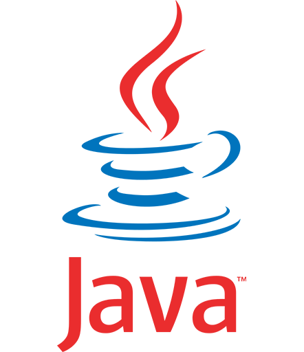
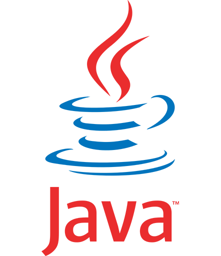
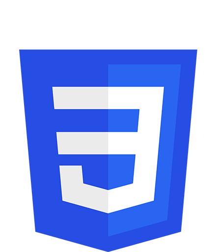
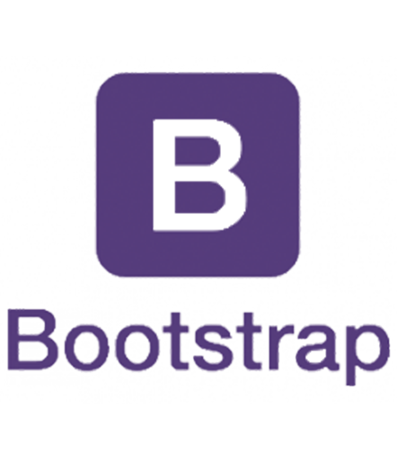
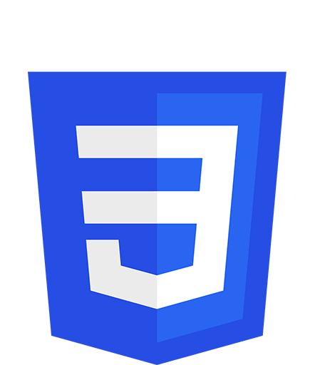
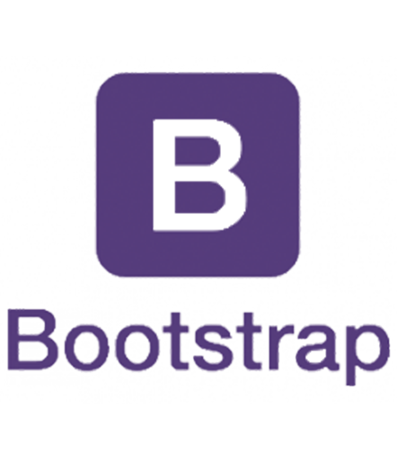

Mes Projets

Portfolio
Projet IUT

Projet Marathon
Projet IUT Fin de semestre 3

Labyrinthe
Projet IUT Fin de semestre 2

Projet Site IUT
Projet IUT Fin de semestre 1

Tourisme de Mémoire
Projet Licence
Développement 3D
Projet Personnel


 



 


